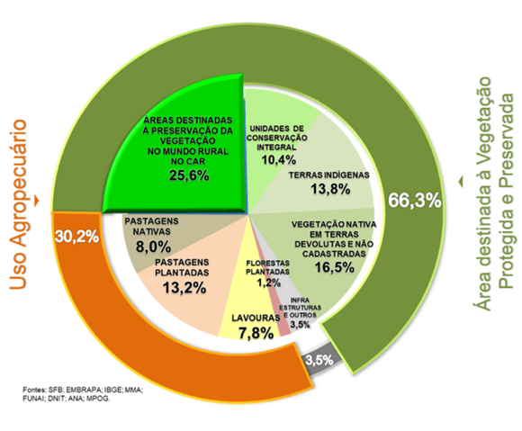
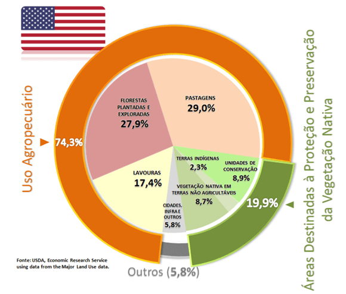
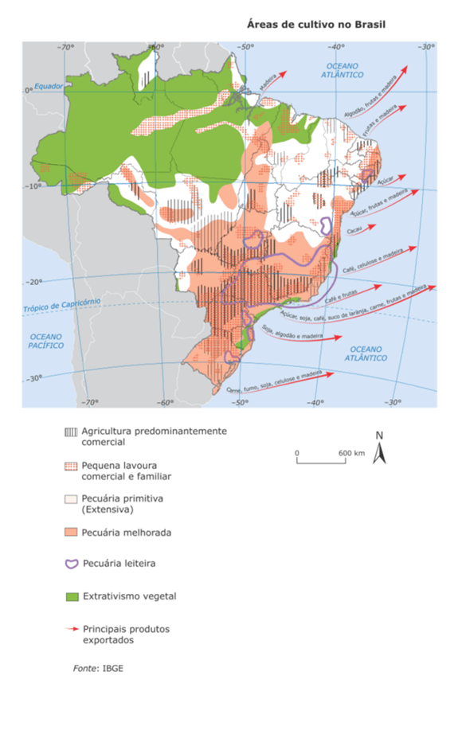
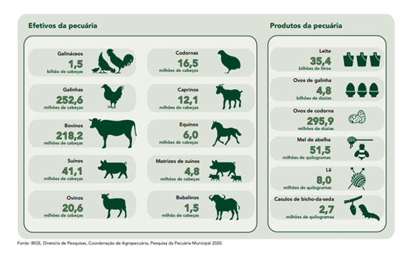

Texto 18 - Geografia agrária II – a produção agropecuária brasileira
Conteúdo: Uso da terra; Tipos de cultivo; Pecuária; Agronegócio; Fronteira agrícola; Modernização agrícola;
Objetivo: Identificar e compreender a espacialização dos tipos de cultivo e o grau diferenciado de modernização da agricultura brasileira e suas desigualdades socioespaciais.
Digite seu nome
Introdução
Na aula passada estudamos sobre a vegetação brasileira e suas
características no território. Hoje vamos verificar como o solo é utilizado no país para a produção de
diversos gêneros alimentícios bem como de víveres.
O Brasil, o 5º maior país do mundo, possui uma vasta extensão de terras cultiváveis. Essa característica,
aliada à modernização da agricultura, faz do Brasil um líder na produção agrícola global. A agricultura
moderna envolve maquinário avançado, como tratores e colheitadeiras, uso de produtos químicos para aumentar
a produtividade e financiamento governamental.
No Nordeste, áreas especializadas na produção de frutas contrastam com a produção de arroz no Rio Grande do
Sul. Pequenos agricultores familiares diferem dos grandes exportadores de carne que alimentam milhões no
exterior. Vamos explorar nesta aula como essa rede de produção e circulação funciona no território
brasileiro.
Como a terra é usada para a agropecuária no Brasil?
Vamos iniciar essa jornada através
agropecuária brasileira conhecendo a disponibilidade de terras em nosso
país, e, igualmente, como o território está repartido em diferentes porções de áreas cultiváveis.
×
A agropecuária compreende os seguintes segmentos: Agricultura, pecuária e produção florestal;
Pesca e aquicultura. A metodologia do IBGE trabalha com o valor bruto da produção de todos os
produtos do Censo Agropecuário, como arroz, feijão, café, laranja, mandioca, soja, diversos
cereais, dentre outros.
Vamos relembrar a quantidade de terras que o Brasil possui, conforme tabela abaixo:
Tabela 01 - Quantificação das áreas destinadas à proteção e preservação da vegetação nativa e demais usos e
ocupação das terras no Brasil (2018).
Categorias
ÁREA (ha)
% DA ÁREA DO BRASIL (2018)
Áreas destinadas à preservação da vegetação nativa cadastradas no car (mundo rural –
pecuária, agricultura, silvicultura, extrativismo…)
218.245.801
25,6
Unidades de conservação integral
88.429.181
10,4
Terras indígenas
117.338.721
13,8
Vegetação nativa em terra devoluta e não cadastrada
O Brasil detém uma das maiores áreas agrícolas do globo. O país possui uma área total de 851 milhões de
hectares,
mas apenas cerca de 33% destes são ocupados pela agropecuária (plantações e criações). Isso equivale a 282
milhões de hectares, sendo que 220 milhões são usados para pecuária e 62 milhões para agricultura.
Lembre-se: 01 hectare é a medida de um quadrado de 100m x 100m, totalizando 10 mil m².
Veja na figura abaixo a distribuição de terras no Brasil:

e comparando com a distribuição de terras do Estados Unidos temos uma situação bem diferente. Grande parte do
território, aproximadamente 75% já foi tomado para a prática agrícola.

Agora vamos ver o que se cultiva no território brasileiro.
Áreas de cultivo no Brasil
A economia brasileira é fortemente impulsionada pela agropecuária, com recordes na produção de cereais,
oleaginosas e leguminosas. Principais estados produtores incluem Rio Grande do Sul, Paraná, São Paulo, Minas
Gerais, Goiás, Mato Grosso e Mato Grosso do Sul. Veja o mapa a seguir:

Principais Produtos e Áreas Produtoras
Café: Cultivado principalmente em Minas Gerais e Espírito Santo, o Brasil é o maior produtor
e exportador mundial. Plantado inicialmente no Vale do Paraíba, no Rio de Janeiro, expandiu-se para São
Paulo e norte do Paraná no século XX.
Cana-de-açúcar: Introduzida no século XVI, é agora cultivada principalmente no interior de
São Paulo, além de Minas Gerais e Alagoas. A produção de álcool combustível impulsionou a expansão desde os
anos 1970.
Algodão: Cultivado no Nordeste (algodão arbóreo) e Centro-Sul (algodão herbáceo). Permitido
desde 2005, o cultivo de algodão transgênico é regulamentado no Brasil.
Soja: Inicialmente plantada no Rio Grande do Sul e Paraná, expandiu-se para Minas Gerais,
Goiás, Mato Grosso do Sul, Mato Grosso e oeste da Bahia. O Brasil é o segundo maior produtor mundial, com 60
milhões de toneladas.
Laranja: Principalmente produzida no oeste de São Paulo, com 75% da produção nacional, além
de Minas Gerais, Espírito Santo e a Baixada Fluminense.
Cacau: Principalmente cultivado na Bahia, que responde por 80% da produção nacional.
Pimenta-do-reino: Originária da Ásia, é cultivada no Pará e no Vale do Ribeira, em São
Paulo.
Uva: Introduzida pela colonização italiana, é cultivada no Rio Grande do Sul (região
serrana) e também em São Paulo e Minas Gerais. O Vale do Rio São Francisco é notável pela produção irrigada.
Fumo: Produzido em Arapiraca (Sergipe) para charutos e em Santa Cruz do Sul (RS) e interior
de Santa Catarina para cigarros.
Banana: Exportada principalmente do Vale do Ribeira, litoral paranaense e Bahia, com
destaque também para os litorais fluminense e capixaba.
Feijão: Cultivado em estados como Paraná, Minas Gerais, São Paulo e Bahia, com destaque para
o município de Irecê na Bahia.
Milho: Produzido em todo o Brasil, especialmente no Paraná, Rio Grande do Sul, Santa
Catarina e Minas Gerais, utilizado para consumo humano e ração animal.
Mandioca: Nativa da Amazônia, é uma lavoura de subsistência com maiores produtores na Bahia,
Maranhão, Minas Gerais e Rio Grande do Sul.
Pecuária brasileira
A pecuária e a avicultura são setores importantes nas exportações brasileiras, mas enfrentam desafios,
principalmente o impacto ambiental do avanço dos pastos em áreas de florestas nativas.
Sistemas de Criação
Existem diferentes formas de criação de animais como atividade lucrativa:
Criação Intensiva: O gado é criado em confinamento ou em pequenas áreas de pastagem. Os
animais são geralmente de raças selecionadas, resultando em alta produtividade de leite, carne e couro
de alta qualidade.
Criação Extensiva: Os animais são criados soltos em grandes áreas de pastagem, com
menores investimentos e rendimento.
Criação Semiextensiva: No Brasil, predomina a criação semiextensiva, onde os animais
são criados em pastos cultivados, mas recebem vacinação e acompanhamento veterinário.
Tecnologia na Pecuária
Na pecuária, fatores naturais como pastagens e clima adequado são essenciais, mas a tecnologia desempenha um
papel crescente na melhoria da produtividade e qualidade da produção animal.
Avanços Tecnológicos
Seleção Genética: Utilização de técnicas de biotecnologia para selecionar e reproduzir
animais de corte ou leiteiros com maior produtividade, resultando em melhorias qualitativas ao longo das
gerações. Exames genéticos também são empregados para analisar características hereditárias.
Inseminação Artificial: Método que utiliza sêmen de animais selecionados para
fertilizar a fêmea, aumentando a qualidade genética da cria.
Fecundação In Vitro: Processo de fertilização em laboratório, utilizando ovos
recolhidos de fêmeas e espermatozoides de machos selecionados.
Clonagem: Produção em laboratório de indivíduos geneticamente idênticos.
Adaptação ao Mercado Internacional
Com a expansão do mercado de carne brasileira no exterior, frigoríficos e proprietários rurais precisam
ajustar suas práticas aos padrões internacionais.
Criação Intensiva: Crescente utilização no setor de gado leiteiro, visando aumentar a
eficiência produtiva.
Zootecnia
Zootecnia é uma área dedicada ao estudo da reprodução, genética e nutrição de animais, com foco na criação
comercial. Apesar de frequentemente associada à veterinária, sua ênfase está na produção animal para fins
comerciais.
Bovinos
O Brasil possui um dos maiores rebanhos bovinos do mundo, atingindo pouco mais de 218 milhões de cabeças em
2020, segundo dados do IBGE. A concentração desse rebanho é significativa no centro-oeste do país.
Diversidade de Raças
Zebu: Predominância de animais de origem indiana, especialmente a variedade de gado
Zebu conhecida como Nelore. Adaptado ao clima quente e úmido do Brasil, é criado principalmente para
corte.
Raças Europeias: Também são criadas raças bovinas de origem europeia, como o Holandês,
Jersey e Hereford. Essas raças são valorizadas principalmente na produção leiteira.
Desafios e Melhorias na Produção
Produção Leiteira Intensiva: Crescimento da criação de rebanhos leiteiros de forma
intensiva.
Melhoria da Qualidade do Leite: Produtores estão focados em melhorar a qualidade do
leite, incluindo o teor de gordura, e em cumprir metas de higiene e controle sanitário.
Expansão na Amazônia: A região da Amazônia tem vivenciado um aumento significativo na
atividade pecuária, o que levanta preocupações ambientais devido ao desmatamento associado.
A pecuária bovina brasileira enfrenta desafios relacionados à sustentabilidade ambiental e à busca por
práticas mais eficientes e sustentáveis, ao mesmo tempo em que busca atender à crescente demanda por carne e
leite no mercado nacional e internacional.

Embrapa e a Pecuária: Impulsionando o Desenvolvimento Sustentável
A Empresa Brasileira de Pesquisa Agropecuária (Embrapa), vinculada ao Ministério da Agricultura, Pecuária
e Abastecimento, foi criada em 26 de abril de 1973 com o objetivo de pesquisar soluções que garantam a
sustentabilidade do desenvolvimento do espaço rural.
Atuação e Impacto
Unidades de Pesquisa: Com 38 unidades de pesquisa, 3 de serviços e 3 unidades
administrativas, a Embrapa coordena o Sistema Nacional de Pesquisa Agropecuária, colaborando com
universidades, instituições de pesquisa estaduais e federais, e empresas privadas.
Desenvolvimentos Significativos: Ao longo de 30 anos, a Embrapa alcançou avanços
significativos na pecuária, quadruplicando a produção de carne bovina e suína. Em apenas 18 meses,
implementou melhorias que resultaram em um aumento na produção de carne de frango e leite.
A Embrapa desempenha um papel crucial na inovação e no desenvolvimento tecnológico da pecuária
brasileira, impulsionando a eficiência, a produtividade e a sustentabilidade do setor.
O avanço da pecuária na Amazônia
O avanço da pecuária na Amazônia Legal é evidenciado pelo recorde de exportação de carne em alguns
municípios da região.
Um exemplo é São Félix do Xingu, no Estado do Pará, onde áreas equivalentes a quase 10 vezes o tamanho da
cidade de São Paulo foram desmatadas para dar lugar a pastagens. Esse cenário se repete em outros
municípios, levando a Amazônia Legal a ser responsável por um terço das exportações de carne do Brasil,
país líder nessa atividade no mercado internacional.
Apesar do discurso oficial de combate ao desmatamento, a política de subsídios aos pecuaristas promove a
derrubada da floresta para implantar fazendas de criação de bovinos. Para alguns produtores, é mais
barato desmatar e formar novas pastagens do que investir na recuperação de áreas degradadas.
Essa lógica pode condenar inúmeras áreas de solos pobres situadas nesse município e em outros que sigam
esse exemplo.
SOLOMON, Marta. “Com estímulo oficial, floresta vira capim”. Folha de S.Paulo, São
Paulo, 13 jan. 2008. Caderno Ciência.
Suínos, Ovinos, Caprinos e Equinos: Panorama da Pecuária Brasileira
Suínos
Região Líder: O Sul do Brasil lidera a criação de suínos, com frigoríficos especializados na
região.
Padrões Sanitários: Devido aos avanços no setor e rigorosos controles sanitários, países
como a Rússia voltaram a importar carne suína brasileira.
Ovinos e Caprinos
Crescimento no Nordeste: A criação de ovelhas e cabras tem crescido significativamente no
Nordeste brasileiro, destinada principalmente à subsistência.
Diferenças Regionais: Enquanto o Nordeste se destaca na criação de ovinos, o Sul é conhecido
pela produção de carne de ovinos lanados.
Equinos, Muares e Asininos
Rebanho de Equinos: Minas Gerais e Rio Grande do Sul são líderes na criação de equinos,
amplamente utilizados como animais de tração.
Cuidados e Preocupações: Discussões sobre o bem-estar e leis específicas têm surgido para
coibir maus-tratos a equinos em áreas urbanas.
Bubalinos
Introdução e Expansão: Os búfalos foram introduzidos no Brasil em 1870, com sua criação
iniciada na Ilha de Marajó. Hoje, o Pará lidera a criação nacional.
Produtos e Interesse: O consumo de queijo de búfala é difundido, e o interesse na carne
desses animais tem crescido devido ao seu sabor e baixo teor de gordura.
Avicultura: Destaque na Produção Mundial
Liderança Global: O Brasil é o maior produtor mundial de aves, com destaque para a produção
de frangos.
Fatores de Destaque: A grande extensão territorial, oferta de grãos e mão de obra favorecem
o setor avícola brasileiro.
Exportação e Mercados: Desde 2004, o Brasil lidera as exportações de carne de frango, com os
principais compradores sendo Arábia Saudita, Japão, Holanda e Kuwait.
Desafios Sanitários: Preocupações com o controle de vacinação e medidas sanitárias
aumentaram após a epidemia de gripe aviária.
A pecuária brasileira abrange uma ampla variedade de espécies, impulsionando a economia e a produção de
alimentos no país.
A gripe aviária
A gripe aviária é uma epidemia em animais causada por um subtipo do vírus influenza, o H5N1. Desde 2003,
esse subtipo vem produzindo surtos em rebanhos de aves em vários países asiáticos e, recentemente, tem
sido detectado também em países africanos e em aves selvagens de países europeus.
O vírus H5N1 tem infectado seres humanos, produzindo um quadro grave e de alta mortalidade. No entanto, o
risco de a gripe aviária surgir no Brasil é relativamente baixo quando comparado a outros países. Não
existem focos em países vizinhos que poderiam servir de fonte de contaminação através das fronteiras,
como ocorre na Europa e na Ásia. Além disso, o Brasil não importa aves para consumo; ao contrário, é um
dos maiores exportadores do mundo. Outro aspecto positivo é que as rotas migratórias fundamentais das
aves que passam pelo Brasil têm início em regiões que, até o momento, estão livres de contaminação pelo
H5N1.
O agronegócio é fazer do campo um espaço de negócio. Isso confronta com o estilo camponês de viver e de
produzir. Ele tem uma forma não capitalista de produzir, o que se chama de agricultura familiar,
preferencialmente chamada de agricultura camponesa. Há uma disputa entre esses dois “mundos” de agricultura.
Ao mesmo tempo que o campo passa a ser disputado pelos grandes grupos que buscam o lucro, há uma outra forma
de agricultura, que é sustentável ambientalmente e produz fruto mais saudável.
A agricultura camponesa ainda ocupa grande espaço no campo brasileiro, seja através da reforma agrária, seja
através de formas muito anteriores de posse e ocupação da terra.
Agroindústria é, por definição, “qualquer indústria que use a produção agrícola como matéria-prima para
alterá-la em sua forma e transformá-la em um produto que é função da exigência do mercado consumidor”.
Os diferentes tipos de agroindústrias podem ser:
De alimentos para o consumo interno: sucos, açúcar, grãos, óleo comestível etc.
Energéticas: biocombustível.
De produtos em geral para a exportação: borracha, óleo, abacaxi em compota etc.
Não alimentícias: lã, fibras, pele e couro.
Elaboração de Carta ao Congresso
Objetivo: Os alunos irão explorar diferentes perspectivas sobre temas relacionados ao
agronegócio e à agropecuária brasileira, defendendo seus pontos de vista em uma carta ao congresso.
Instruções:
Divida a turma em grupos, atribuindo a cada grupo um dos quatro temas mencionados: Agronegócio versus
Agricultura Familiar, Impacto ambiental da expansão agropecuária, Desafios e oportunidades da
agroindústria, Controle sanitário e saúde pública.
Cada grupo deve discutir e elaborar argumentos para defender seu ponto de vista sobre o tema atribuído.
Eles devem considerar aspectos positivos e negativos, bem como possíveis soluções para os desafios
identificados.
Depois de discutir, os grupos devem redigir uma carta ao congresso, seguindo o formato abaixo:
Destinatário: Congresso Nacional do Brasil
Assunto: Defesa de [tema atribuído]
Saudação: Ex: "Prezados membros do Congresso Nacional,"
Introdução: Apresentação do tema e da posição do grupo.
Desenvolvimento: Apresentação dos argumentos principais, com base em evidências
e exemplos.
Conclusão: Reafirmação da posição do grupo e solicitação de ações específicas
por parte do congresso.
Despedida: Ex: "Atenciosamente,"
Assinatura: Nome dos membros do grupo.
Após a redação das cartas, os grupos devem compartilhar suas cartas em uma sessão de leitura em sala de
aula.
Após as leituras, promova uma discussão em sala de aula, incentivando os alunos a expressarem seus
pontos de vista e debaterem sobre as diferentes perspectivas apresentadas nas cartas.
Como atividade complementar, os alunos podem ser convidados a enviar suas cartas ao congresso de forma
simbólica, promovendo uma reflexão sobre a participação cívica e o papel dos cidadãos na formulação de
políticas públicas.
Não existe pergunta boba! A Ciência é feita de perguntas!
P:Por que a soja é tão importante para o Centro-Oeste do
Brasil?
R: A soja é uma cultura agrícola de grande relevância para o
Centro-Oeste devido às suas extensas monoculturas mecanizadas voltadas principalmente para a exportação,
o que contribui significativamente para a economia da região.
P:Como o avanço da agropecuária está relacionado ao
desmatamento?
R: O avanço da agropecuária muitas vezes resulta no desmatamento de
áreas naturais para dar lugar a pastagens e plantações, impactando negativamente o meio ambiente e a
biodiversidade.
P: Qual é a diferença entre a agricultura empresarial e as
unidades familiares em termos de eficiência na produção de alimentos?
R: Apesar de ocupar uma área menor, as unidades familiares tendem a
ser mais eficientes na produção de alimentos para o mercado interno, enquanto a agricultura empresarial,
embora ocupe uma área maior, pode ser mais voltada para a produção de commodities agrícolas destinadas à
exportação.
VESENTINI, José William. Geografia: o mundo em transição. Ensino médio. 2. ed. - São
Paulo: Ática, 2013.
VOGLER, Christopher. A jornada do escritor: estruturas míticas para escritores.
Tradução de Ana Maria Machado. 2.ed. Rio de Janeiro: Nova Fronteira, 2006.
SKOLNICK, Evan. Video game storytelling: what every developer needs to know about
narrative techniques.New Yoirk: Watson-Guptill, 2014.